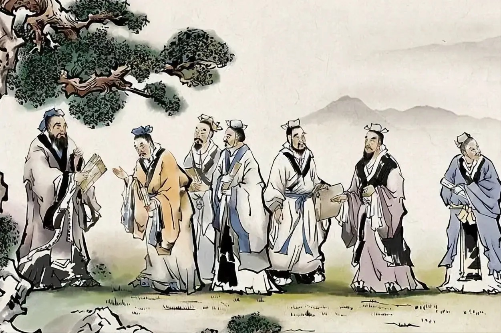

01形成
回应动荡的时代
墨家形成于春秋战国之际，以墨子为代表。当时诸侯竞争、社会秩序变化，战争与繁重支出影响着民众生活。墨家关注这些具体困境，希望通过改变人与人、国家与国家之间的关系，减少伤害、增进天下之利。
关键词：天下之利
一、墨家从何而来？——回应动荡的时代，也回应知识本身。

墨家形成于春秋战国之际，以墨子为代表。当时诸侯竞争、社会秩序变化，战争与繁重支出影响着民众生活。墨家关注这些具体困境，希望通过改变人与人、国家与国家之间的关系，减少伤害、增进天下之利。
关键词：天下之利
《韩非子·显学》称：“世之显学，儒、墨也。”这反映出墨家在战国时期的重要影响。同篇记载，墨子去世后出现相里氏、相夫氏、邓陵氏等支派，说明墨家内部也存在不同解释，不能将其看作始终完全一致的思想体系。
“世之显学，儒、墨也。”——《韩非子·显学》
后期墨家进一步研究概念、推理与知识问题，并讨论几何、光学、力学等内容。这些讨论主要保存在《经上》《经下》《经说上》《经说下》《大取》《小取》等篇，通常合称《墨经》或《墨辩》。这表明墨家不仅关心社会应该怎样运行，也关心人如何认识事物、判断论证。不过，这些古代知识不宜直接等同于现代科学体系。
关键词：《墨经》 · 名辩与自然知识
秦汉以后，墨家作为独立学派的影响逐渐减弱。研究者从政治环境变化、组织延续、实践要求及思想被其他传统吸收等方面解释这一过程。其中，墨家突破出身限制的用人主张、严格的组织实践，与新的政治社会环境之间可能存在张力。但墨家自身也重视君主、等级与统一，不能简单将其解释为现代平等思想与古代专制的对抗。清代学者孙诒让整理、校释《墨子》，完成《墨子閒诂》，成为后世研究的重要注本。近代以来，墨学再次受到学界关注。
关键词：孙诒让《墨子閒诂》